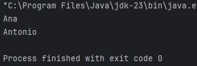
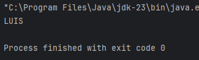

Un Stream nos ayudan a manipular las colecciones, y son una secuencia de elementos que se pueden procesar de forma funcional (filtros, transformaciones, etc.).
¿Para qué sirven?
- Filtrar datos.
- Transformarlos.
- Contar, ordenar o agrupar.
- Procesarlos en cadena.
- Evitar bucles explícitos como for o while.
Por ejemplo:
public class Main {
public static void main(String[] args) {
List<String> nombres = new ArrayList<>(Arrays.asList("Ana", "Luis", "Pedro", "Antonio"));
nombres.stream()
.filter(nombre -> nombre.startsWith("A"))
.forEach(System.out::println);
}
}En este caso, el filtro que se ha aplicado es quedarse con los elementos de la lista que empiecen por "A", y los que se hayan seleccionado, se imprimen.

Otro ejemplo:
public class Main {
public static void main(String[] args) {
List<String> nombres = new ArrayList<>(Arrays.asList("Ana", "Luis", "Pedro", "Antonio"));
List<String> filtrados = nombres.stream()
.filter(n -> n.startsWith("L"))
.map(String::toUpperCase)
.collect(Collectors.toList());
filtrados.forEach(System.out::println);
}
}
En este segundo caso, filtramos los que empiezan por L, los pasamos a mayúsculas y lo guardamos en otra lista.
Vale, ¿pero cómo funciona?
Un Stream tiene tres pasos fundamentales:
1. Origen de datos: el stream nace de una colección:
List<String> nombres = Arrays.asList("Ana", "Luis", "Pedro");
nombres.stream()
2. Operaciones intermedias (se encadenan y no ejecutan):
- .filter(...) → Filtra datos
- .map(...) → Transforma datos
- .sorted() → Ordena
- .distinct() → Elimina duplicados
etc.
3. Operación terminal (ejecuta)
- .forEach(...) → Ejecuta una acción
- .collect(...) → Recoge resultados
- .count() → Cuenta elementos
- .sum() → Suma elementos
Más ejemplos:
- Transformar, ordenar e imprimir
List<String> frutas = Arrays.asList("manzana", "pera", "kiwi", "plátano");
frutas.stream() // origen
.map(String::toUpperCase) // intermedia: transforma
.sorted() // intermedia: ordena
.forEach(System.out::println); // terminal
- Elevar al cuadrado sólo los pares y mostrar
List<Integer> numeros = Arrays.asList(1, 2, 3, 4, 5, 6);
numeros.stream() // origen
.filter(n -> n % 2 == 0) // intermedia: sólo pares
.map(n -> n * n) // intermedia: al cuadrado
.forEach(System.out::println); // terminal- Obtener una nueva lista sin duplicados
List<Integer> numeros = Arrays.asList(1, 2, 2, 3, 4, 4, 5);
List<Integer> sinDuplicados = numeros.stream()
.distinct() // intermedia
.collect(Collectors.toList()); // terminal
System.out.println(sinDuplicados); // [1, 2, 3, 4, 5]
Comparación: for clásico vs. stream
For tradicional:
for (String nombre : nombres) {
if (nombre.length() > 4) {
System.out.println(nombre.toUpperCase());
}
}
Stream:
nombres.stream()
.filter(n -> n.length() > 4)
.map(String::toUpperCase)
.forEach(System.out::println);